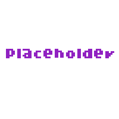

BASIC
Basic showcase
It really is basic

RESOURCES
Not fully empty but i have it for testing anyway
THEMES
Oh yeah you can change the colours of the headers in the map

Changes the navbar lol
Warning for flashing lights and some spoilers i guess
Took me longer than i'd like
those were pretty cool ngl
Because what is homestuck without them